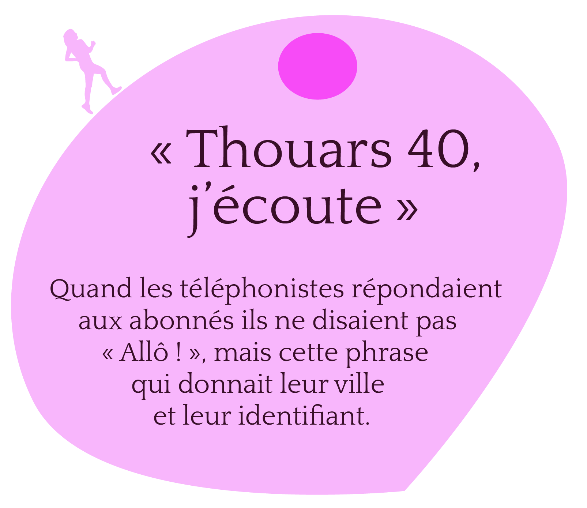
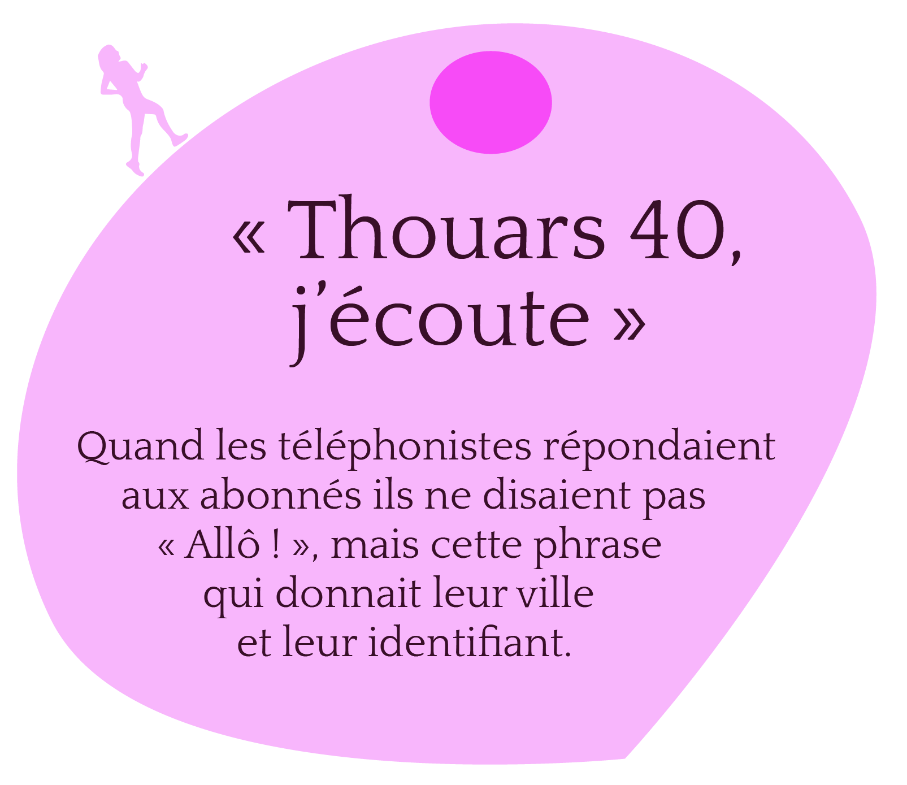

Situation STS • sciences, techniques & société
Réalisé dans le cadre de la licence LP15301A du Cnam • Projet de médiation culturelle des sciences et techniques
Sources
Article « Passage piéton », Wikipédia
« Passage piéton : de l'Empire romain aux Beatles », www.bienpublic.com, 2021
« Le premier passage piéton en 3D est à Cysoing », www.lavoixdunord.fr, 2017


 
